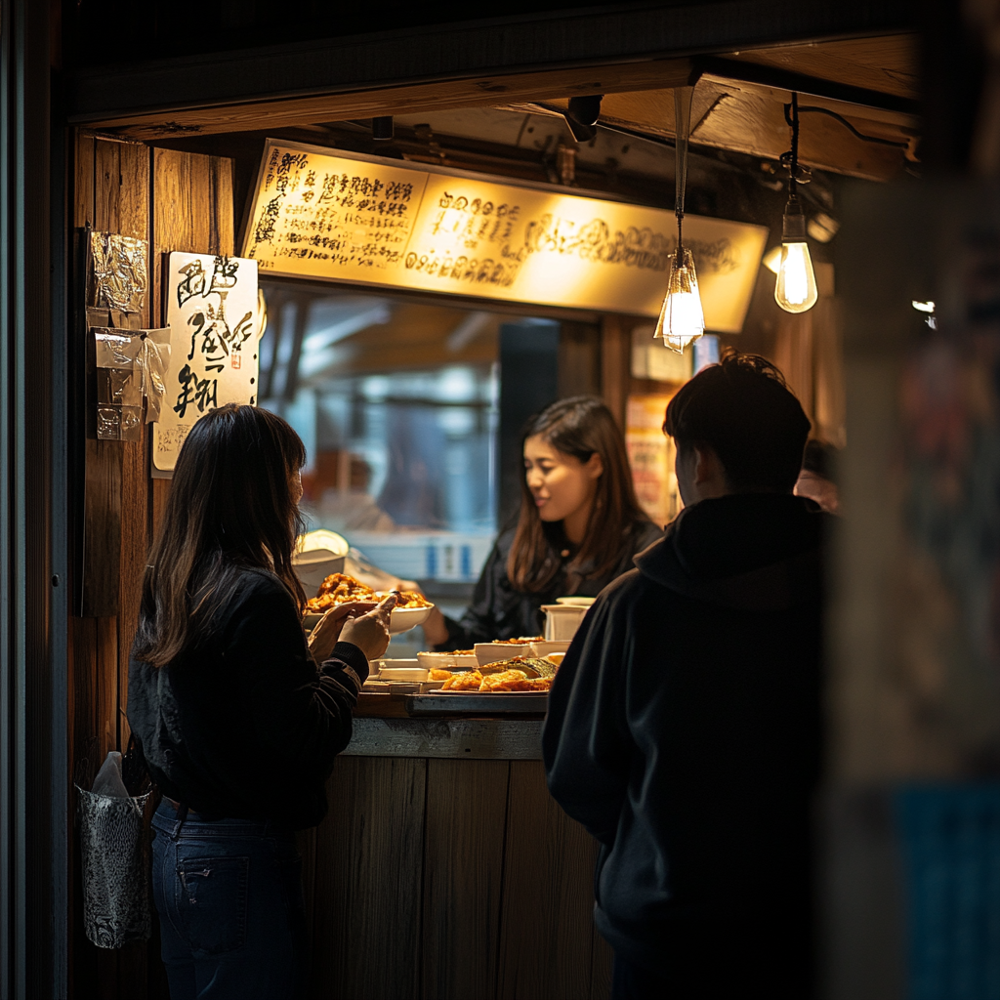

Ordering Food and Drinks#
Overview#
In this lesson, we will delve into the essential elements of ordering food and drinks in a Japanese izakaya. You will learn key phrases and vocabulary to communicate your preferences effectively to the waitstaff. Understanding cultural norms and practices will also be highlighted to ensure a smooth dining experience.
By the end of this lesson, you will be able to confidently place your order, ask questions about the menu, and make special requests in Japanese. You will gain the necessary skills to navigate through a Japanese menu, understand the etiquette of ordering in restaurants, and engage in basic conversation with the staff. This knowledge will help you feel more comfortable and at ease when dining out in a Japanese establishment.
Key Lesson Concepts:
Learn key phrases and vocabulary for ordering food and drinks.
Understand cultural norms and practices related to dining in a Japanese izakaya.
Gain confidence in communicating preferences, asking questions, and making requests.
Vocabulary#
Expressions#
注文をお願いします (Chūmon wo onegaishimasu) - “I’d like to order, please.”
メニューを見せてください (Menyū wo misete kudasai) - “Could I see the menu, please?”
英語のメニューはありますか (eigo no menyuu wa arimasu ka) - “Do you have an English menu?”
おすすめは何ですか (Osusume wa nan desu ka) - “What do you recommend?”
これはなんですか (Kore wa nandesuka) - “What is this?”
これは辛い/酸っぱい/甘い/苦いですか (Kore wa karai/suppai/amai/nigai desuka) - “Is this spicy/sour/sweet/bitter?”
玉ねぎを抜きにしてもらえますか (Tama-negi wo nuki ni shite moraemasuka) - “Can I have (this food) without onions?”
これに[X] が入っていますか (kore ni [X] ga haitte imasuka) - “Does this have [X] in it?
すみません (Sumimasen!) - “Excuse me!” or “Sorry!”
氷をください (Kōri wo kudasai) - “Ice, please.”
お水をください (Omizu wo kudasai) - “Water, please.”
お飲み物は何にしますか (Onomi mono wa nani ni shimasuka) - “What would you like to drink?”
ご注文はお決まりですか (Gochuumon wa okimari desu ka) - “Have you decided what you want to order?”
以上です (ijou desu) - “That’s it”
とりあえず以上です (Toriaezu ijou desu) - “That’s it for now”
私は大丈夫です (daijōbudesu) = “I am okay”
はい、少々お待ち下さい (Hai, shou shou omachi kudasai) - “Okay, please wait”
お代わりをお願いします (Okawari o onegai shimasu) – “Could I have the same again, please.”
すみません、注文した (food name) は後どのぐらいかかりますか (Sumimasen, chuumon shita (food name) wa ato dono gurai kakarimasuka) - “Excuse me, how long will it take to get the (food name) I ordered?”
すみません、注文した(food name)をキャンセルしたい (Sumimasen, chuumon shita (food name) wo kyanseru shitai) - “Excuse me, I’d like to cancel my order of (food name).”
すみません、これは私が注文した料理ではありません。取り替えてもらえますか (Sumimasen, kore wa watashi ga chuumon shita ryouri de wa arimasen. Tori kaete moraemasuka) - “Excuse me, this is not the dish that I ordered. Could you please replace it?”
Counting#
Counting small items in Japanese uses a special counter called こ (ko). Here’s how you would count from 1 to 10 for small items:
いっこ (ikko) - 1 small object
にこ (niko) - 2 small objects
さんこ (sanko) - 3 small objects
よんこ (yonko) - 4 small objects
ごこ (goko) - 5 small objects
ろっこ (rokko) - 6 small objects
ななこ (nanako) - 7 small objects
はっこ (hakko) - 8 small objects
きゅうこ (kyuuko) - 9 small objects
じゅっこ (jukko) - 10 small objects
Alternatively, there is a default counter that is also appropriate to use when ordering items at an izakaya. Counting small objects in Japanese with the つ (tsu) counter is more general and often used for objects without a specific counter. Here’s how to count from 1 to 10 with つ (-su):
ひとつ (hitotsu) - 1
ふたつ (futatsu) - 2
みっつ (mittsu) - 3
よっつ (yottsu) - 4
いつつ (itsutsu) - 5
むっつ (muttsu) - 6
ななつ (nanatsu) - 7
やっつ (yattsu) - 8
ここのつ (kokonotsu) - 9
とお (tō) - 10
The つ counter is very versatile and often used for counting general items, especially when there isn’t a more specific counter available.
Drinks#
Here’s a list of 10 typical drinks you’ll often find at a Japanese izakaya:
生ビール (nama bīru) - Draft beer
焼酎 (shōchū) - Japanese distilled spirit, served with water, soda, or on the rocks
日本酒 (nihonshu) - Sake, Japanese rice wine (saying sake in japanese can mean alcohol in general).
ハイボール (haibōru) - Highball, whiskey with soda water
梅酒 (umeshu) - Plum wine, served on the rocks or with soda
ウーロンハイ (ūron hai) - Shochu mixed with oolong tea
レモンサワー (remon sawā) - Lemon sour, shochu with lemon juice and soda water
緑茶ハイ (ryokucha hai) - Shochu mixed with green tea
カクテル (kakuteru) - Cocktails, often simple mixes like gin and tonic or vodka soda
ノンアルコールビール (non-arukōru bīru) - Non-alcoholic beer
These drinks offer a wide range of flavors and strengths to suit the casual, social atmosphere of an izakaya.
Food#
Here are 10 of the most popular izakaya food items in Japanese:
枝豆 (edamame) - Boiled soybeans with salt
唐揚げ (karaage) - Japanese-style fried chicken
焼き鳥 (yakitori) - Grilled chicken skewers
だし巻き卵 (dashimaki tamago) - Japanese rolled omelette
刺身盛り合わせ (sashimi moriawase) - Assorted sashimi
ポテトフライ (poteto furai) - French fries
たこ焼き (takoyaki) - Octopus balls
天ぷら盛り合わせ (tempura moriawase) - Assorted tempura
おでん (oden) - Simmered vegetables, tofu, and fish cakes
焼きおにぎり (yaki onigiri) - Grilled rice ball with soy sauce
These dishes are crowd-pleasers, pairing well with izakaya drinks and embodying a range of traditional and comforting Japanese flavors.
Grammar#
[Dish/Drink] を [Quantity] ください ([Dish/Drink] wo [Quantity] kudasai) - “Please give me [Quantity] [Dish/Drink].”
Example: 生ビールを一つください (Nama bīru wo hitotsu kudasai) - “One draft beer, please.”
[Dish/Drink] を [Quantity] と [Dish/Drink] を [Quantity] ください ([Dish/Drink] wo [Quantity] to [Dish/Drink] wo [Quantity]kudasai) - “Please give me [Quantity] [Dish/Drink] and [Quantity] [Dish/Drink].”
Role-Playing#
Scene 1: A customer enters an izakaya and orders drinks.#
Characters:#
Customer
Waiter
Dialogue:#
Customer:
すみません、ビールをふたつください。 Sumimasen, biiru o futatsu kudasai. Excuse me, two beers, please.
Waiter:
はい、ビールをふたつですね。しょうしょうおまちください。 Hai, biiru o futatsu desu ne. Shōshō omachi kudasai. Okay, two beers. Please wait a moment. (After a moment)
Waiter:
おまたせしました。ビールをどうぞ。 Omatase shimashita. Biiru o dōzo. Thank you for waiting. Here are your beers.
Customer:
ありがとう。 Arigatō. Thank you.
Scene 2: A customer orders edamame and yakitori.#
Characters:#
Customer
Waiter
Dialogue:#
Customer:
すみません、えだまめをひとつとやきとりをみっつください。 Sumimasen, edamame o hitotsu to yakitori o mittsu kudasai. Excuse me, one edamame and three yakitori, please.
Waiter:
かしこまりました。やきとりはしおかたれ、どちらにしますか？ Kashikomarimashita. Yakitori wa shio ka tare, dochira ni shimasu ka? Understood. For the yakitori, do you prefer salt or sauce?
Customer:
たれをおねがいします。 Tare o onegaishimasu. Sauce, please.
Waiter:
はい、えだまめひとつとやきとりみっつ（たれ）ですね。しょうしょうおまちください。 Hai, edamame hitotsu to yakitori mittsu (tare) desu ne. Shōshō omachi kudasai. Okay, one edamame and three yakitori with sauce. Please wait a moment. (After a moment)
Waiter:
おまたせしました。えだまめとやきとりです。 Omatase shimashita. Edamame to yakitori desu. Thank you for waiting. Here are your edamame and yakitori.

Quiz#
Multiple Choice Quiz#
Type-out Quiz#
For this quiz, your keyboard must be able to type hiragana and katakana. The quiz is NOT using kanji characters.